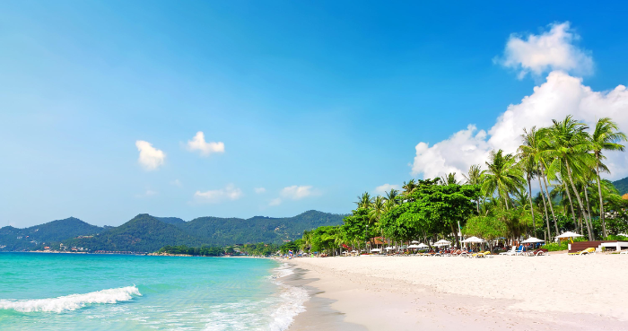
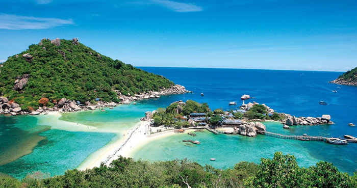
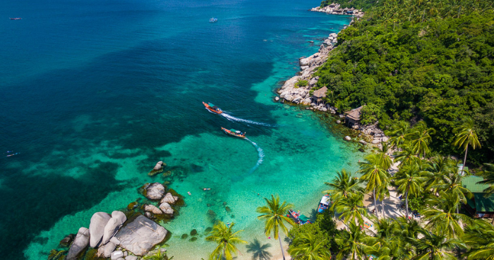
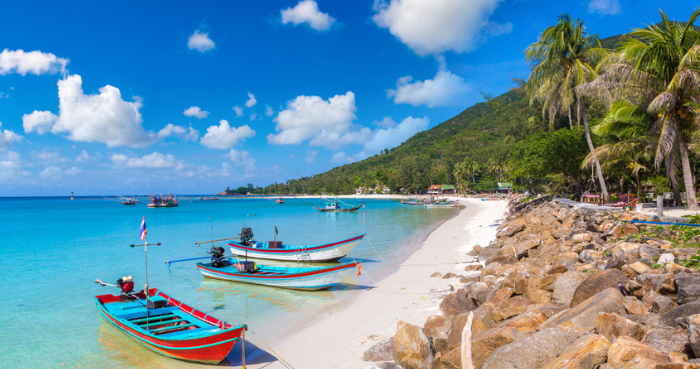

I am responsible for taking you to the island to play with the
water.
Let's go and see what islands there are.
Samui Island
Nangyuan Island
Tao Island
Pha-Ngan Island
×
Samui Island

Samui is the third largest Island in Thailand and the largest in
an archipelago of more than 80 islands that includes the Ang
Thong National Marine Park, a kayaking paradise and day Trip
from Ko Samui. While Samui is small enough to be circumnavigated
in just a couple of hours by motorbike or car, the island
features such a variety of Beaches and activities that it would
be impossible to experience everything in a single visit. There
are so many beautiful beaches here like Chaweng, Lamai, Taling
Ngam, and Natien. Besides plentiful nature, the island is also
full of History and Culture.
×
Nangyuan Island

Ko Nangyuan is located in KoPhaNgan District of SuratThani
Province. It consists of three islets linked together by sand
beaches. The island is a great diving site for coral reefs
viewing. Ko Nang Yaun is the property of the Treasury Department
and currently rented and operated by Nangyuan Island Dive
Resort. Ko Nang Yuan is an island of white fine sand and crystal
clear water that mostly suits tranquility lovers. Besides,
shallow-water and deep-water coral reefs, which are beautiful
and still intact, attract a regular visit by divers. Moreover, a
scenic viewpoint allows visitors to overlook a splendid line of
three beaches where the islands are connected and beautiful
sunrise and sunset.
×
Tao Island

The tiny Island of Ko Tao ("Turtle Island"), 45 km north of Koh
Phangan, is one of the top scuba diving destinations in
Thailand. What’s more, the island, which is the site of
important breeding grounds for Hawksbill and Green turtles, is
now a centre for environmentally friendly diving practices,
including the reintroduction of hundreds of juvenile turtles to
the island's ecosystem and efforts to preserve and grow coral
reefs.
×
Pha-Ngan Island

Ko Pha-ngan is one of the most famous islands in the world. It
is well known for the Full Moon Party held every full moon at
the beach of Hat Rin. A large number of tourists from all over
the world visit the island, especially in the summer. Apart from
beautiful beaches and amazing blue water, you can explore the
natural beauty of numerous natural attractions such as
waterfalls and mountains and discover the local lifestyle of
coconut farmers and fishermen in the village of Ban Chalok Lam.
As the island offers visitors all types of tourist attractions,
it is a must-visit destination for both Thai and foreign
tourists.